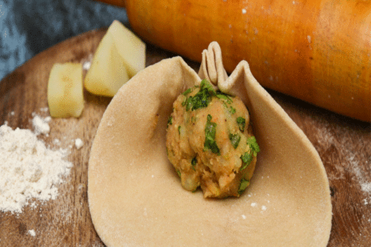

To make delicious Aloo Parathas, boil the potatoes at least a few hours before you plan to make the parathas, mash them in a large bowl and cover and refrigerate. Take them out from the fridge and add chopped onions, coriander leaves, salt, garam masala powder and red chilli powder. Mix well so that no lumps remain. Ensure that you have finely chopped the onions or the filling will fall out.
Put wheat flour in a large mixing bowl. Add water gradually and knead into a soft dough. Make small-medium balls of the dough and roll them out into 3 to 4-inch circles. Add a spoonful of potato filling in the centre. Gradually press the rolling pin on all sides while making the parathas. Be very careful to apply pressure evenly. It is very important to ensure that your potato mixture is mashed well and not lumpy or you will never be able to make perfect parathas. Seal the dough and round it with your fingers. Now, roll them with a rolling pin into round parathas. Apply the pressure very evenly and gently on all sides. Press very lightly so that the mixture does not come out.
Heat an iron tawa and roast the parathas, cooking them on both sides with a spoonful of olive oil. If you want to use less oil on the parathas, first roast them on both sides on low flame and when they are slightly crispy, apply olive oil with a kitchen brush on both sides. You must keep the flame low.
Serve piping hot parathas with butter and chutney.and enjoy your healthy meal with your family